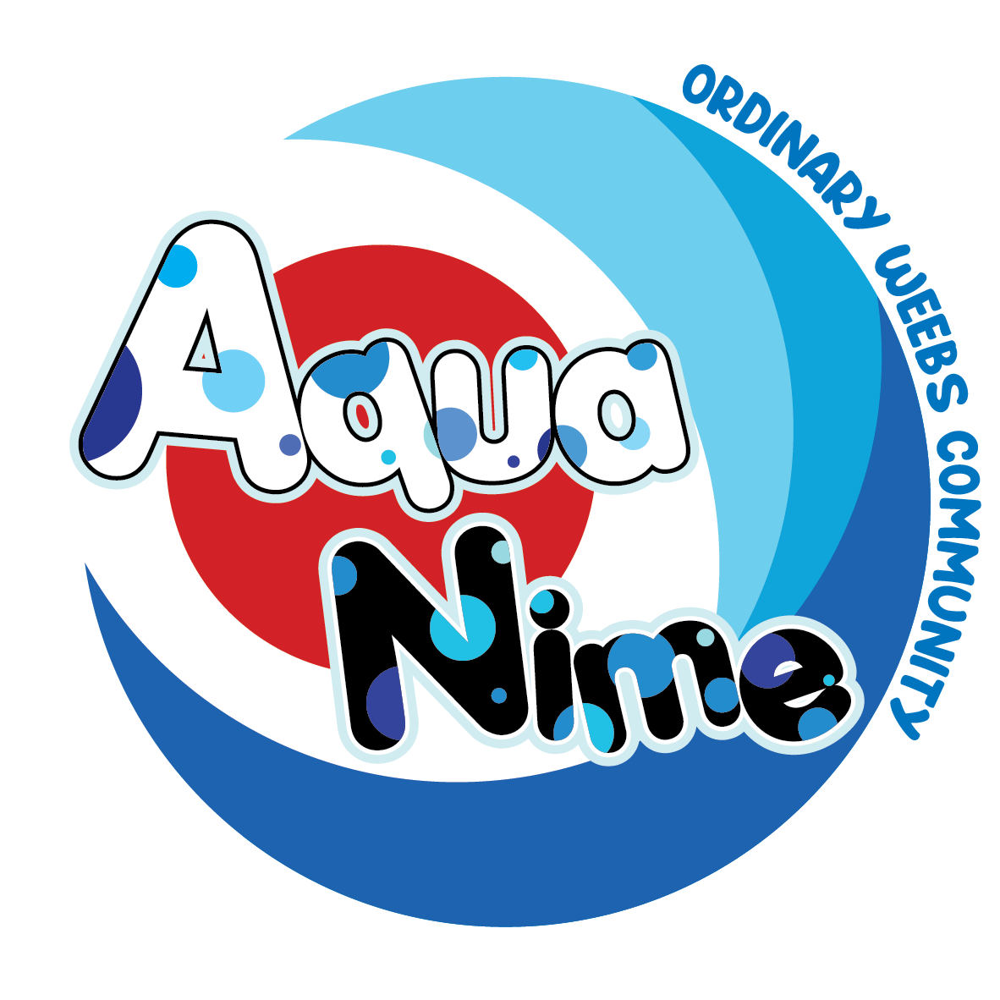

Community
Ruang untuk bertemu, berbagi minat, menjalankan kegiatan, dan membangun pengalaman bersama.

AquaNimePT AQUANIME KREATIF INDONESIAPT AQUANIME KREATIF INDONESIA — COMPANY
Kami membawa pengalaman membangun komunitas ke ruang yang lebih luas—mempertemukan orang, kreativitas, media, pengalaman, dan peluang kolaborasi.
COMMUNITY · CREATIVE · COLLABORATION
AquaNime tidak dimulai sebagai perusahaan. Perjalanan ini berawal pada 2017 dari L-Army Ordinary Weebs, sebuah komunitas yang mempertemukan orang-orang dengan ketertarikan terhadap budaya pop Jepang. Pada 29 Mei 2022, komunitas melakukan rebranding menjadi AquaNime Ordinary Weebs.
Pengalaman tersebut membentuk cara kami melihat pertumbuhan: bukan hanya tentang menyelenggarakan kegiatan, tetapi juga memberi ruang bagi orang untuk bertemu, belajar, berkarya, dan bekerja bersama. PT AquaNime Kreatif Indonesia membawa semangat itu ke bidang pengembangan yang lebih luas.
Kunjungi website komunitas ↗Kami mengembangkan beberapa bidang yang saling berhubungan. Sebagiannya berangkat dari aktivitas komunitas dan proyek kreatif; sebagian lainnya merupakan arah pengembangan yang dibangun bertahap.
Ruang untuk bertemu, berbagi minat, menjalankan kegiatan, dan membangun pengalaman bersama.
Pengembangan karya, desain, ilustrasi, proyek kreatif, dan solusi digital melalui brand seperti Aria Labs.
Dokumentasi, publikasi, informasi, dan cerita yang membantu karya serta aktivitas menemukan audiensnya.
Pengalaman tatap muka, gathering, festival, dan program yang mempertemukan komunitas dengan publik.
Ruang untuk mengenali potensi, mengembangkan kemampuan, dan membuka kesempatan kontribusi.
Kolaborasi dengan komunitas, organisasi, kreator, institusi, dan mitra yang memiliki tujuan sejalan.
Pengembangan teknologi dan platform untuk mendukung pengalaman komunitas serta kebutuhan operasional.
Identitas komunitas yang berakar dari budaya pop Jepang, pertemanan, dan kegiatan bersama.
Website komunitas ↗Brand studio kreatif untuk branding, graphic design, UI/UX, dan pengembangan website. Layanan dan ruang lingkup proyek dikonfirmasi melalui proses konsultasi.
Creative arm / Aria LabsSemesta karakter dan talenta original yang dikembangkan melalui karakter, cerita, visual, konten, musik, dan pengalaman.
Character & talent universeKami memilih untuk membangun secara bertahap. Aktivitas komunitas dan proyek yang sudah berjalan menjadi tempat belajar, sementara inisiatif baru diuji berdasarkan kebutuhan, kapasitas tim, dan peluang kolaborasi.
Untuk pembicaraan mengenai kerja sama, media, proyek kreatif, atau informasi perusahaan, kunjungi kanal resmi AquaNime.
Kunjungi AquaNime ↗Alamat email dan kontak perusahaan akan ditampilkan setelah kanal resminya dikonfirmasi.